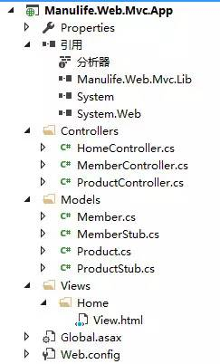
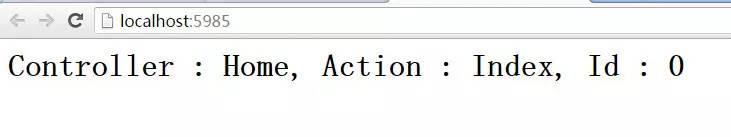
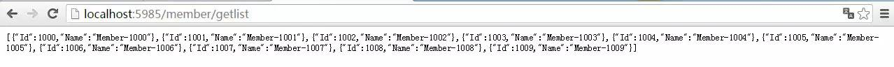

接上文
（3）View
在ASP.NET MVC中提供了aspx与Razor等模板引擎，这里我偷了懒，直接借助了NVelocity模板引擎来实现。因此，这个文件夹中只有一个VelocityHelper类（我直接从网上搜索的），该类可以帮助我们找到指定的HTML并绑定Model实体。
///
/// NVelocity模板工具类 VelocityHelper
///
public class VelocityHelper
{
private VelocityEngine velocity = null;
private IContext context = null;
public object YZControl { get; private set; }
///
/// 构造函数
///
/// 模板文件夹路径
public VelocityHelper(string templatDir)
{
Init(templatDir);
}
///
/// 无参数构造函数
///
public VelocityHelper() { }
///
/// 初始话NVelocity模块
///
public void Init(string templatDir)
{
// 创建VelocityEngine实例对象
velocity = new VelocityEngine();
// 使用设置初始化VelocityEngine
ExtendedProperties props = new ExtendedProperties();
props.AddProperty(RuntimeConstants.RESOURCE_LOADER, "file");
props.AddProperty(RuntimeConstants.FILE_RESOURCE_LOADER_PATH, HttpContext.Current.Server.MapPath(templatDir));
//props.AddProperty(RuntimeConstants.FILE_RESOURCE_LOADER_PATH, Path.GetDirectoryName(HttpContext.Current.Request.PhysicalPath));
props.AddProperty(RuntimeConstants.INPUT_ENCODING, "utf-8");
props.AddProperty(RuntimeConstants.OUTPUT_ENCODING, "utf-8");
// 模板的缓存设置
props.AddProperty(RuntimeConstants.FILE_RESOURCE_LOADER_CACHE, true); //是否缓存
props.AddProperty("file.resource.loader.modificationCheckInterval", (Int64)30); //缓存时间(秒)
velocity.Init(props);
// 为模板变量赋值
context = new VelocityContext();
}
///
/// 给模板变量赋值
///
/// 模板变量
/// 模板变量值
public void Put(string key, object value)
{
if (context == null)
{
context = new VelocityContext();
}
context.Put(key, value);
}
///
/// 显示模板
///
/// 模板文件名
public void Display(string templatFileName)
{
// 从文件中读取模板
Template template = velocity.GetTemplate(templatFileName);
// 合并模板
StringWriter writer = new StringWriter();
template.Merge(context, writer);
// 输出
HttpContext.Current.Response.Clear();
HttpContext.Current.Response.Write(writer.ToString());
HttpContext.Current.Response.Flush();
HttpContext.Current.Response.End();
}
///
/// 根据模板生成静态页面
///
///
///
public void CreateHtml(string templatFileName, string htmlpath)
{
// 从文件中读取模板
Template template = velocity.GetTemplate(templatFileName);
// 合并模板
StringWriter writer = new StringWriter();
template.Merge(context, writer);
using (StreamWriter write2 = new StreamWriter(HttpContext.Current.Server.MapPath(htmlpath), false, Encoding.UTF8, 200))
{
write2.Write(writer);
write2.Flush();
write2.Close();
}
}
///
/// 根据模板生成静态页面
///
///
///
//public void CreateJS(string templatFileName, string htmlpath)
//{
// //从文件中读取模板
// Template template = velocity.GetTemplate(templatFileName);
// //合并模板
// StringWriter writer = new StringWriter();
// template.Merge(context, writer);
// using (StreamWriter write2 = new StreamWriter(HttpContext.Current.Server.MapPath(htmlpath), false, Encoding.UTF8, 200))
// {
// write2.Write(YZControl.Strings.Html2Js(YZControl.Strings.ZipHtml(writer.ToString())));
// write2.Flush();
// write2.Close();
// }
//}
}
三、我的MVC框架应用实例

这是一个ASP.NET 空Web应用项目搭建起来的MVC Web应用项目，它移除了自带的所有引用项目，仅仅保留了System和System.Web，做到了尽可能地“纯净”。通过引入Mvc.Lib核心类库，建立Controller、Model和View文件夹以及对应的类和HTML来实现MVC模式。
（1）引入Mvc.Lib核心类库之后，需要配置一下Web.config，使UrlRoutingModule能够正常工作：
<system.web>
<compilation debug="true" targetFramework="4.5"/>
<httpRuntime targetFramework="4.5"/>
<!-- HttpModule配置（IIS6版本） -->
<httpModules>
<add name="UrlRoutingModule" type="Manulife.Web.Mvc.Lib.Routing.UrlRoutingModule"/>
</httpModules>
</system.web>
<system.webServer>
<!-- 配置不去校验是否是集成模式 -->
<validation validateIntegratedModeConfiguration="false"/>
<!-- HttpModule配置（IIS7及以上版本） -->
<modules>
<add name="UrlRoutingModule" type="Manulife.Web.Mvc.Lib.Routing.UrlRoutingModule"/>
</modules>
</system.webServer>
（2）新建Global全局处理配置，在Application_Start事件中为项目添加路由规则：
public class Global : System.Web.HttpApplication
{
protected void Application_Start(object sender, EventArgs e)
{
// 注册路由规则1
RouteTable.Routes.MapRoute(
urlTemplate: "{controller}/{action}/{id}",
defaults: new { controller = "Home", action = "Index" }
);
// 注册路由规则2
RouteTable.Routes.MapRoute(
urlTemplate: "{controller}/{action}",
defaults: new { controller = "Home", action = "Index" }
);
// 注册路由规则3
RouteTable.Routes.MapRoute(
urlTemplate: "{controller}",
defaults: new { controller = "Home", action = "Index" }
);
}
}
（3）看看Controller是怎么写的？是不是很熟悉？
public class HomeController : ControllerBase
{
public ActionResult Index(int id, string controller, string action)
{
return new ContentResult(string.Format("<h1>Controller : {0}, Action : {1}, Id : {2}</h1>", controller, action, id), "text/html");
}
public ActionResult View()
{
return new ViewResult(new { Id = 1, Name = "Edison Chou", Age = 27, Gender = true });
}
}
（4）看看View中的HTML呢？这里使用NVelocity模板引擎提供的语法，操作Model实体对象。
<!DOCTYPE html>
<html>
<head>
<meta http-equiv="Content-Type" content="text/html; charset=utf-8" />
<title>Index - View</title>
<meta charset="utf-8" />
</head>
<body>
<h1>User Name : $model.Name</h1>
<h1>User Age : $model.Age</h1>
</body>
</html>
（1）默认路由 : home/index -> ContentResult

（2）请求JsonResult

（3）请求ViewResult

【今日微信公号推荐↓】
![]()